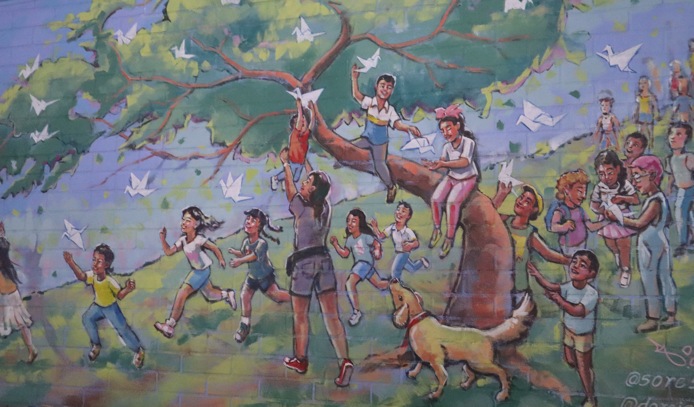
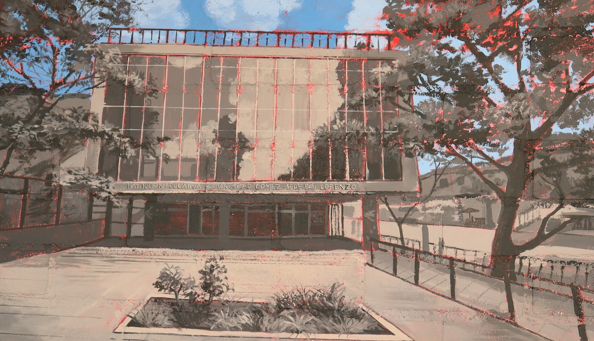
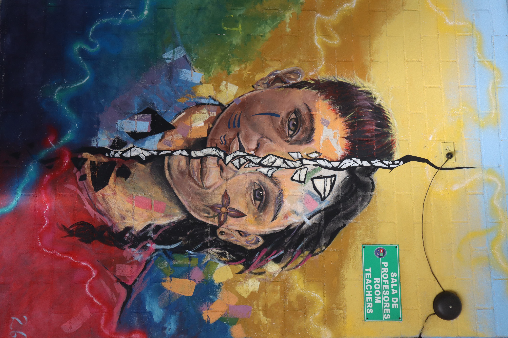
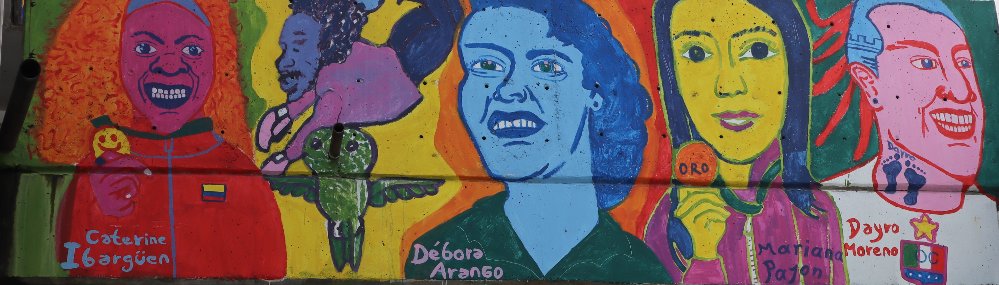
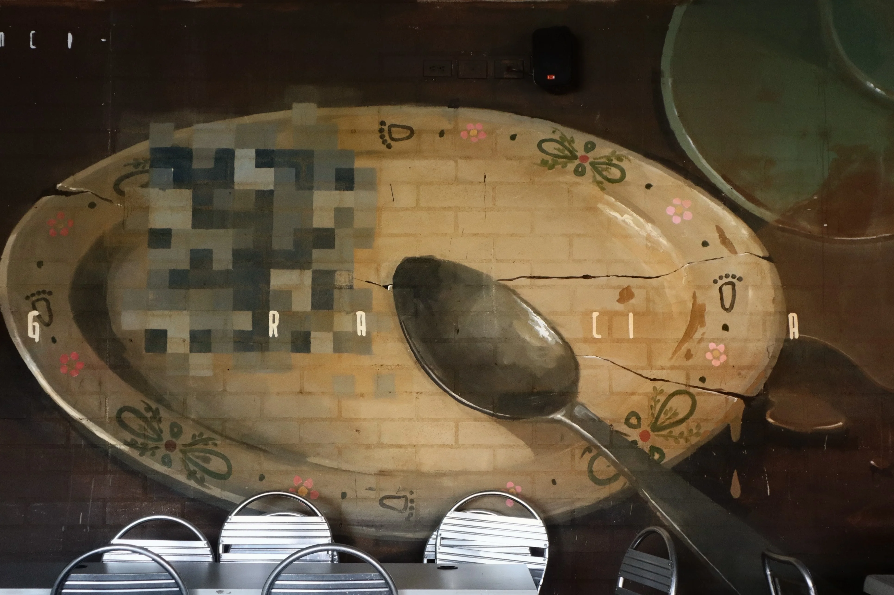
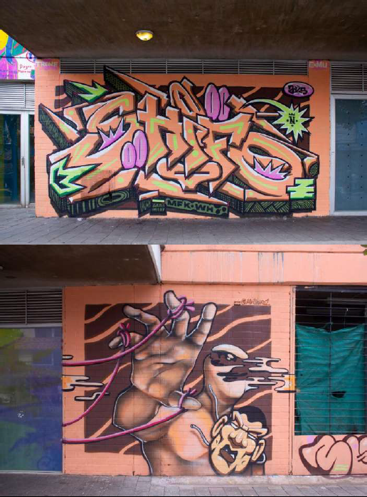

Episodio destacado

Episodio 1 · Junio 2024
La memoria del barrio
Una conversación sobre el mural "Las Alas del Barrio" y cómo nació de las voces de los jóvenes del barrio. Los artistas del Colectivo Arte nos cuentan el proceso creativo y comunitario de esta obra que hoy vive en los muros del colegio.
0:00
--:--
🔊
Todos los episodios
1
EP 01 · Junio 2024
La memoria del barrio
Mural "Las Alas del Barrio" · Colectivo Arte · Colegio del barrio
0:00
--:--
🔊
1:23 min

2
EP 02 · Marzo 2023
Manos que Construyen Paz
Mural "Manos que Construyen Paz" · María García
0:00
--:--
🔊
1:30 min

3
EP 03 · Enero 2024
Raíces y Sueños
Mural "Raíces y Sueños" · Arte Social · Galería Sueños
0:00
--:--
🔊
1:13 min

4
EP 04 · Nov 2022
La fuerza del pueblo
Mural "La Fuerza del Pueblo" · Jhoan Sebastián Montoya
0:00
--:--
🔊
1:08 min

5
EP 05 · Agosto 2020
El plato que nunca quedaba vacío
Mural "El plato que nunca quedaba vacío" · Juan David Jiménez
0:00
--:--
🔊
2:50 min

5
EP 06 · Feb 2021
Nadie sabía exactamente cuándo aparecía
Mural "Nadie sabía exactamente cuándo aparecía" · Christian Bran Arboleda
0:00
--:--
🔊
2:54 min

5
EP 07 · Dic 2019
La ciudad de las máscaras caídas
Mural "La ciudad de las máscaras caídas" · Juan Rodríguez
0:00
--:--
🔊
2:40 min
Escúchanos donde quieras
Disponible en tus plataformas de podcast favoritas